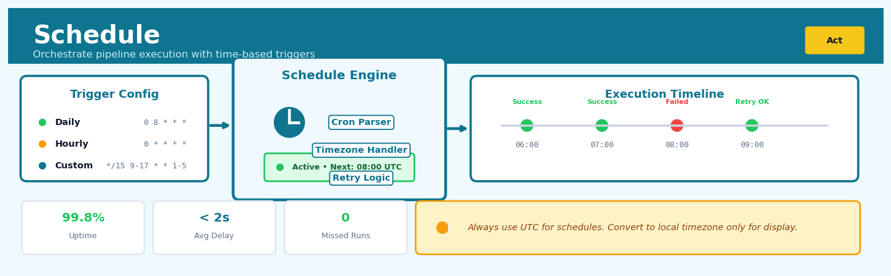

Schedule#


The biggest mistake teams make with scheduling is using server-local timezones instead of UTC, which creates a maintenance nightmare during daylight saving transitions and cross-region deployments. Always design schedules with explicit timezone handling and test your cron expressions against edge cases like the 2am hour that repeats or disappears. Remember that a robust schedule includes not just the trigger logic but also backfill capabilities for when things inevitably miss a beat.
The 60-Second Version#
What it does: Schedule automatically runs your data analysis at set intervals—daily, weekly, or hourly—so insights refresh without anyone clicking “run.”
When to use it: When business decisions depend on regularly updated metrics, reports, or predictions that would otherwise require someone to manually regenerate them.
What you get back: A self-sustaining pipeline that delivers fresh dashboards, alerts, or data feeds on time, every time, letting teams act on current information instead of stale snapshots.
At a Glance
Difficulty |
Easy |
Typical runtime |
Seconds to configure; runs on your defined cadence |
What you bring |
A working analysis workflow and a decision about update frequency |
What you get |
Automatically refreshed outputs delivered to dashboards, email, or databases |
Heuristix bucket |
Act — Operationalising Results |
Schedule transforms one-off analysis into infrastructure—but someone must still monitor whether the underlying data quality and business logic remain valid over time.
Learning Objectives#
After reading this chapter, a business user will be able to:
Identify which recurring business processes require scheduled analytics workflows by distinguishing between one-off analysis requests and decisions that need systematic refresh cycles.
Interpret schedule execution logs and status reports to explain to stakeholders whether insights are current, delayed, or potentially stale due to failed runs.
Decide appropriate refresh frequencies for reports and dashboards by weighing the trade-off between data freshness, computational cost, and the actual pace of business change.
After reading this chapter, a data scientist will be able to:
Implement robust scheduled workflows that handle dependency chains, data availability delays, and retry logic for transient failures without manual intervention.
Configure schedule timing parameters (frequency, time windows, timeout limits) by analyzing upstream data latency patterns and downstream consumption requirements.
Diagnose scheduling failures by distinguishing between code errors, infrastructure issues, dependency problems, and data quality anomalies using monitoring outputs and execution metadata.
Overview#
Schedule is an operationalisation technique that automates the periodic execution of analytical workflows, transforming ad-hoc analyses into production-grade data pipelines. Its core purpose is to ensure that business decisions are informed by fresh, consistently-generated insights without requiring manual intervention. Schedule belongs to the family of workflow orchestration and job scheduling methods, drawing on principles from cron-based task scheduling, dependency-aware DAG execution, and distributed systems theory.
When to Use This#
Use this when your organisation requires regular reporting cadences (daily sales dashboards, weekly forecasts, monthly portfolio reviews) and manual execution creates bottlenecks or introduces human error.
Use this when analytical outputs feed downstream automated systems—such as inventory replenishment algorithms, dynamic pricing engines, or fraud detection alerts—that expect fresh predictions on a predictable schedule.
Use this when data sources update at known intervals (nightly data warehouse refreshes, hourly transaction logs, real-time streaming batches) and your analysis should synchronise with these updates.
Use this when regulatory or audit requirements mandate documented, timestamped execution of analytical procedures with reproducible outputs.
Use this when multiple stakeholders across time zones need access to updated results at specific times without coordinating manual handoffs.
Use this when you need to implement model retraining pipelines where machine learning models must be periodically refreshed with new training data.
Do NOT use this when the underlying data changes unpredictably or is event-driven—consider event-triggered execution instead.
Do NOT use this when the analysis requires human judgement or iterative exploration before results can be trusted—scheduling is for stable, validated workflows.
Do NOT use this when computational resources are constrained and jobs might queue indefinitely—implement resource management first.
Do NOT use this when upstream data quality is unreliable and you lack validation gates—garbage scheduled regularly is still garbage.
Questions This Answers#
Keeping Insights Current and Actionable#
Why am I looking at last month’s dashboard when I need to make decisions today?
How do I make sure our sales forecast updates every Monday morning before the leadership call?
Can we automatically refresh our customer churn predictions weekly so account managers have time to intervene?
What’s the point of building this recommendation engine if it only runs when someone remembers to click a button?
How do we ensure our inventory optimization model runs every night with today’s demand data, not last week’s?
Eliminating Manual Work and Human Error#
Why is Sarah spending three hours every Friday copying data and re-running the same reports instead of doing actual analysis?
How many times has our quarterly business review been delayed because someone forgot to update the pipeline?
Can we stop relying on Marcus to remember to generate the risk scores every morning at 6am?
What happens to our promotional pricing model when the data scientist who runs it manually goes on vacation?
Is there a way to guarantee our compliance reports generate on the first of every month without me having to chase anyone?
Scaling and Reliability#
We built this customer segmentation for the US market — how do we run the same thing for 12 countries without hiring 12 analysts?
What if our fraud detection model needs to process transactions every 15 minutes across five different systems simultaneously?
How do I know our scheduled pipeline actually ran last night, or if it failed silently and no one noticed?
Can we handle Black Friday traffic when our recommendation system needs to update product scores every hour instead of daily?
How It Works#
Imagine Sarah runs a popular bakery that opens at 6 AM sharp. Every morning at 4 AM, her head baker arrives to start the same precise routine: check inventory levels, prepare dough based on yesterday’s sales data, bake the morning’s croissants, and update the display case—all without Sarah having to wake up and give instructions. The bakery thrives because this workflow runs like clockwork, transforming raw ingredients into fresh pastries before the first customer arrives. Schedule works exactly like Sarah’s head baker: it wakes up at predetermined times, executes your data analysis workflow in the right sequence, and delivers fresh insights before anyone asks for them.
TIME-BASED WORKFLOW ORCHESTRATION
Day 1: 2:00 AM Day 2: 2:00 AM
┌─────────────┐ ┌─────────────┐
│ Scheduler │ │ Scheduler │
│ Wakes Up │ │ Wakes Up │
└──────┬──────┘ └──────┬──────┘
│ │
↓ ↓
┌──────────────────┐ ┌──────────────────┐
│ 1. Extract Data │ │ 1. Extract Data │
│ (Sales DB) │ │ (Sales DB) │
└────────┬─────────┘ └────────┬─────────┘
│ │
↓ ↓
┌──────────────────┐ ┌──────────────────┐
│ 2. Transform │ │ 2. Transform │
│ (Calc metrics) │ │ (Calc metrics) │
└────────┬─────────┘ └────────┬─────────┘
│ │
↓ ↓
┌──────────────────┐ ┌──────────────────┐
│ 3. Load Report │ │ 3. Load Report │
│ (Dashboard) │ │ (Dashboard) │
└──────────────────┘ └──────────────────┘
Manager sees → Manager sees
Monday's results Tuesday's results
when arriving at 9 AM when arriving at 9 AM
Define the trigger. You first specify when your workflow should run—perhaps every Monday at 2 AM, or every six hours, or whenever new data arrives. This trigger acts like an alarm clock, telling the system exactly when to wake up and start working. Unlike a human analyst who might forget or oversleep, this trigger fires with perfect consistency.
Queue the tasks. When the trigger fires, Schedule places all the tasks in your workflow into an execution queue, respecting dependencies between steps. If Step B needs results from Step A, Schedule ensures A completes before B begins—just like you can’t frost a cake before baking it.
Execute each step. The system works through each task in order: pulling fresh data from databases, running transformations, applying your analytical models, and generating outputs. Each step runs automatically using the same code you developed during analysis, ensuring consistency between what you tested and what runs in production.
Handle failures gracefully. If a step fails—maybe a database is temporarily unavailable—Schedule can retry the task, send alerts to your team, or pause the workflow until someone fixes the problem. This prevents silent failures where outdated results sit unnoticed for days.
Deliver the results. Once all tasks complete successfully, your fresh analysis lands exactly where stakeholders expect it: updated dashboards, emailed reports, or populated databases. The entire workflow runs invisibly, like infrastructure—working perfectly when you don’t notice it at all.
The key insight: Schedule transforms fragile, manual analysis into reliable infrastructure by removing humans from the execution loop while keeping them firmly in control of what gets executed and when.
The Intuition#
Think of scheduling like a well-organised newspaper delivery operation. The printing press (your analytical workflow) produces newspapers (insights), and subscribers (business stakeholders) expect their morning paper at a predictable time. Without a delivery schedule, either the press sits idle or subscribers receive papers at random, unpredictable times. The schedule coordinates production timing with consumption needs, ensuring that effort expended in creating the newspaper actually reaches readers when they need it.
The key insight is that analytical value is often time-dependent. A fraud detection model that runs an hour after transactions occur is far more valuable than one that runs a week later. A demand forecast generated after purchasing decisions have been made is worthless. Scheduling transforms static analytical capabilities into dynamic business infrastructure by aligning computation with business rhythm.
Consider also the reliability dimension. A human analyst might forget to run a critical report, might run it with the wrong parameters, or might be on holiday when the business urgently needs insights. A schedule removes this single point of failure, providing the consistency and auditability that production systems demand. Just as manufacturing plants don’t rely on workers remembering to start the assembly line each morning, data operations shouldn’t rely on analysts remembering to click “run.”
The Mathematics#
Formal Problem Setup#
Let \(\mathcal{W}\) denote a workflow—a directed acyclic graph (DAG) of computational nodes where each node \(n_i\) performs a transformation on input data. Let \(\mathcal{T} = \{t_1, t_2, \ldots\}\) represent a timeline of discrete time points.
A schedule \(S\) is a mapping from time points to workflow executions:
where \(S(t) = 1\) indicates the workflow should execute at time \(t\), and \(S(t) = 0\) indicates no execution.
Cron Expression Formalism#
The standard representation for periodic schedules follows the cron formalism. A cron expression \(C\) is a 5-tuple:
where:
\(m \in \{0, 1, \ldots, 59\} \cup \{*\}\) — minute
\(h \in \{0, 1, \ldots, 23\} \cup \{*\}\) — hour
\(d \in \{1, 2, \ldots, 31\} \cup \{*\}\) — day of month
\(M \in \{1, 2, \ldots, 12\} \cup \{*\}\) — month
\(w \in \{0, 1, \ldots, 6\} \cup \{*\}\) — day of week (0 = Sunday)
The wildcard \(*\) denotes “all valid values.” A time point \(t = (m_t, h_t, d_t, M_t, w_t)\) matches cron expression \(C\) if and only if:
where \(\text{expand}(x)\) returns \(\{x\}\) if \(x\) is a specific value, or the full valid range if \(x = *\).
Execution Windows and Deadlines#
For business applications, we often require not just that a workflow executes, but that it completes within a defined window. Let \(\tau_{\text{start}}\) be the scheduled start time, \(\tau_{\text{complete}}\) be the actual completion time, and \(\Delta_{\text{SLA}}\) be the service level agreement window.
The SLA satisfaction constraint is:
The probability of meeting this constraint depends on the distribution of workflow execution times. If execution time \(T_{\text{exec}}\) follows distribution \(F_T\), then:
Optimal Schedule Spacing#
When scheduling multiple workflows that share computational resources, we must consider contention. Let workflows \(\mathcal{W}_1, \ldots, \mathcal{W}_n\) have execution times \(T_1, \ldots, T_n\) and let the available compute capacity be \(K\) parallel jobs.
The makespan \(M\) for a set of jobs is the total time from first job start to last job completion. For the case where all jobs start simultaneously and resources are shared:
This motivates staggered scheduling. If we introduce offset \(\delta_i\) for workflow \(i\), the objective is:
subject to \(\delta_i + T_i \leq D_i\) where \(D_i\) is the deadline for workflow \(i\).
Dependency-Aware Scheduling#
When workflow \(\mathcal{W}_j\) depends on outputs from \(\mathcal{W}_i\), we have the constraint:
For a dependency DAG \(G = (V, E)\) where vertices are workflows and edges represent dependencies, the earliest possible start time for workflow \(j\) is:
The critical path through the DAG determines the minimum total execution time:
Assumptions#
Clock synchronisation: All systems share a common time reference (typically UTC).
Deterministic triggering: The scheduler reliably evaluates cron expressions.
Idempotent workflows: Re-execution with the same inputs produces equivalent outputs.
Bounded execution time: Workflow execution completes in finite time with probability 1.
Resource availability: Computational resources are available when schedules trigger.
Edge Cases#
Daylight saving transitions: When clocks jump forward, a 2:30 AM schedule may be skipped; when clocks fall back, it may execute twice. UTC-based scheduling avoids this.
Month-end boundaries: Scheduling for day 31 will skip months with fewer days.
Overlapping executions: If execution time exceeds schedule interval, a policy must define whether to skip, queue, or run concurrently.
Understanding the Mathematics#
Cron Expression Pattern Matching#
The equation: $\(\text{match}(t, c) = \bigwedge_{i \in \{\text{min, hour, day, month, dow}\}} (t_i \in c_i)\)$
Read it aloud:
A time t matches a cron pattern c if and only if every component of the time (minute, hour, day of month, month, and day of week) belongs to the corresponding allowed set in the cron specification.
What each symbol means:
\(\text{match}(t, c)\): whether time \(t\) satisfies cron pattern \(c\) (true/false)
\(\bigwedge\): logical AND across all conditions (all must be true)
\(t_i\): the value of time component \(i\) (e.g., \(t_{\text{hour}} = 14\) means 2 PM)
\(c_i\): the set of allowed values for component \(i\) in the cron pattern
\(\in\): “is a member of” or “belongs to”
A concrete numerical example:
Suppose we want to run a sales report at 9:30 AM every weekday. The cron pattern is 30 9 * * 1-5. At 9:30 AM on Tuesday, we have: \(t_{\text{min}} = 30\), \(t_{\text{hour}} = 9\), \(t_{\text{day}} = 15\), \(t_{\text{month}} = 3\), \(t_{\text{dow}} = 2\) (Tuesday). We check: 30 ∈ {30}? Yes. 9 ∈ {9}? Yes. 15 ∈ {1,2,…,31}? Yes. 3 ∈ {1,2,…,12}? Yes. 2 ∈ {1,2,3,4,5}? Yes. All conditions pass, so match returns true—the job executes.
Why this equation matters: Without precise pattern matching, scheduled jobs would fire at the wrong times, causing stale dashboards, missed SLA windows, and cascading pipeline failures.
Schedule Drift and Execution Timing#
The equation: $\(t_{\text{actual}, n} = t_{\text{scheduled}, n} + \Delta_n \quad \text{where} \quad \Delta_n = \text{runtime}_{n-1} + \text{queue\_delay}_n\)$
Read it aloud: The actual execution time of run \(n\) equals its scheduled time plus a drift term, where drift comes from how long the previous run took plus any queuing delay before this run could start.
What each symbol means:
\(t_{\text{actual}, n}\): when run \(n\) actually started executing
\(t_{\text{scheduled}, n}\): when run \(n\) was supposed to start
\(\Delta_n\): drift or delay for run \(n\) (in seconds or minutes)
\(\text{runtime}_{n-1}\): how long run \(n-1\) took to complete
\(\text{queue\_delay}_n\): time run \(n\) waited for resources to become available
A concrete numerical example: A data pipeline is scheduled to run every hour starting at midnight. Run 1 (midnight) starts on time but takes 45 minutes to complete. Run 2 is scheduled for 1:00 AM, but because run 1 didn’t finish until 12:45 AM and two other jobs were queued ahead of it (8 minutes), we have: \(\Delta_2 = 45 + 8 = 53\) minutes. So \(t_{\text{actual}, 2} = 1:00 + 53 \text{ min} = 1:53\) AM. The pipeline is now nearly an hour behind schedule.
Why this equation matters: Unchecked drift compounds over time, turning a real-time analytics system into a batch process that delivers yesterday’s insights tomorrow.
Dependency-Constrained Execution#
The equation: $\(\text{ready}(j) = \bigwedge_{d \in \text{deps}(j)} \left( \text{status}(d) = \text{SUCCESS} \right) \land \left( t_{\text{now}} \geq t_{\text{scheduled}}(j) \right)\)$
Read it aloud: Job \(j\) is ready to execute when all of its dependency jobs have succeeded AND the current time is at or past its scheduled time.
What each symbol means:
\(\text{ready}(j)\): whether job \(j\) can start executing now
\(\text{deps}(j)\): the set of jobs that must complete before \(j\) runs
\(\text{status}(d)\): completion status of dependency \(d\) (SUCCESS, FAILED, or RUNNING)
\(\land\): logical AND (both conditions required)
\(t_{\text{now}}\): current system time
\(t_{\text{scheduled}}(j)\): earliest allowed start time for job \(j\)
A concrete numerical example: A marketing dashboard refresh job depends on three ETL jobs: customer data (finished at 6:15 AM, SUCCESS), transaction data (finished at 6:22 AM, SUCCESS), and product catalog (finished at 6:18 AM, SUCCESS). The dashboard is scheduled for 6:30 AM. At 6:25 AM, all dependencies succeeded but \(6:25 < 6:30\), so ready = false. At 6:30 AM, all dependencies succeeded AND \(6:30 \geq 6:30\), so ready = true—execution begins.
Why this equation matters: Running jobs before their dependencies complete produces incorrect results; waiting longer than necessary delays insights—this equation ensures correctness without sacrificing timeliness.
The Big Picture#
The mathematics of scheduling solves a deceptively simple problem: executing the right computations at the right times in the right order. Pattern matching ensures temporal precision—jobs fire exactly when business rules demand. Drift tracking reveals when reality diverges from intent, triggering alerts before small delays become outages. Dependency logic encodes causal structure, preventing jobs from consuming incomplete data while maximizing parallel execution. Together, these equations transform declarative scheduling rules (“run daily at 9 AM after ETL completes”) into provably correct execution sequences across distributed systems. The essence: scheduling is constraint satisfaction under time pressure.
Python Implementation#
"""
Demonstration of scheduling concepts using APScheduler for local scheduling
and cron expression parsing for production configurations.
"""
import numpy as np
import pandas as pd
from datetime import datetime, timedelta
from typing import Callable, Dict, Any, List
from dataclasses import dataclass
from croniter import croniter
import time
# =============================================================================
# Example 1: Cron Expression Parsing and Next-Run Calculation
# =============================================================================
def demonstrate_cron_parsing():
"""Show how cron expressions translate to execution times."""
# Define various business schedules
schedules = {
"Daily at 6 AM": "0 6 * * *",
"Every Monday at 9 AM": "0 9 * * 1",
"First day of month at midnight": "0 0 1 * *",
"Every 15 minutes": "*/15 * * * *",
"Weekdays at 5:30 PM": "30 17 * * 1-5",
}
base_time = datetime(2024, 1, 15, 10, 30, 0) # Monday, Jan 15, 2024 at 10:30 AM
print("Cron Schedule Analysis")
print("=" * 70)
print(f"Base time: {base_time}")
print()
for name, cron_expr in schedules.items():
cron = croniter(cron_expr, base_time)
# Calculate next 5 execution times
next_runs = [cron.get_next(datetime) for _ in range(5)]
print(f"{name}")
print(f" Cron: {cron_expr}")
print(f" Next 5 runs:")
for run_time in next_runs:
print(f" - {run_time.strftime('%Y-%m-%d %H:%M (%A)')}")
print()
demonstrate_cron_parsing()
# =============================================================================
# Example 2: Schedule Simulation with Execution Time Modelling
# =============================================================================
@dataclass
class WorkflowExecution:
"""Record of a single workflow execution."""
scheduled_time: datetime
start_time: datetime
end_time: datetime
status: str
@property
def execution_duration(self) -> timedelta:
return self.end_time - self.start_time
@property
def delay(self) -> timedelta:
return self.start_time - self.scheduled_time
def simulate_scheduled_workflow(
cron_expr: str,
start_date: datetime,
end_date: datetime,
execution_time_mean: float, # in minutes
execution_time_std: float,
sla_minutes: float,
resource_contention_prob: float = 0.1
) -> pd.DataFrame:
"""
Simulate a scheduled workflow over a time period.
Parameters
----------
cron_expr : str
Cron expression defining the schedule
start_date, end_date : datetime
Simulation period
execution_time_mean, execution_time_std : float
Parameters for log-normal execution time distribution (minutes)
sla_minutes : float
Maximum acceptable execution time
resource_contention_prob : float
Probability of delayed start due to resource contention
"""
np.random.seed(42)
executions = []
cron = croniter(cron_expr, start_date)
scheduled_time = cron.get_next(datetime)
while scheduled_time < end_date:
# Simulate start delay (resource contention)
if np.random.random() < resource_contention_prob:
delay_minutes = np.random.exponential(5) # Exponential delay
else:
delay_minutes = 0
start_time = scheduled_time + timedelta(minutes=delay_minutes)
# Simulate execution time (log-normal distribution)
exec_minutes = np.random.lognormal(
mean=np.log(execution_time_mean),
sigma=execution_time_std / execution_time_mean
)
end_time = start_time + timedelta(minutes=exec_minutes)
# Determine status
total_time = (end_time - scheduled_time).total_seconds() / 60
if total_time <= sla_minutes:
status = "SUCCESS"
else:
status = "SLA_BREACH"
executions.append(WorkflowExecution(
scheduled_time=scheduled_time,
start_time=start_time,
end_time=end_time,
status=status
))
scheduled_time = cron.get_next(datetime)
# Convert to DataFrame for analysis
df = pd.DataFrame([
{
'scheduled_time': e.scheduled_time,
'start_time': e.start_time,
'end_time': e.end_time,
'execution_minutes': e.execution_duration.total_seconds() / 60,
'delay_minutes': e.delay.total_seconds() / 60,
'status': e.status
}
for e in executions
])
return df
# Run simulation
print("\n" + "=" * 70)
print("Workflow Execution Simulation")
print("=" * 70)
simulation_results = simulate_scheduled_workflow(
cron_expr="0 6 * * *", # Daily at 6 AM
start_date=datetime(2024, 1, 1),
end_date=datetime(2024, 4, 1),
execution_time_mean=25, # 25 minutes average
execution_time_std=10,
sla_minutes=45,
resource_contention_prob=0.15
)
print(f"\nSimulation: Daily 6 AM workflow over 3 months")
print(f"Total executions: {len(simulation_results)}")
print(f"\nExecution Time Statistics (minutes):")
print(simulation_results['execution_minutes'].describe().round(2))
print(f"\nSLA Performance:")
status_counts = simulation_results['status'].value_counts()
sla_rate = status_counts.get('SUCCESS', 0) / len(simulation_results) * 100
print(f" SLA compliance rate: {sla_rate:.1f}%")
print(f" Breaches: {status_counts.get('SLA_BREACH', 0)}")
print(f"\nDelay Statistics (minutes):")
delays = simulation_results[simulation_results['delay_minutes'] > 0]['delay_minutes']
print(f" Executions with delay: {len(delays)} ({len(delays)/len(simulation_results)*100:.1f}%)")
if len(delays) > 0:
print(f" Mean delay when delayed: {delays.mean():.1f} minutes")
# =============================================================================
# Example 3: Multi-Workflow Dependency Scheduling
# =============================================================================
print("\n" + "=" * 70)
print("Dependency-Aware Schedule Planning")
print("=" * 70)
@dataclass
class ScheduledWorkflow:
"""Workflow with scheduling metadata."""
name: str
expected_duration_minutes: int
dependencies: List[str]
deadline_offset_minutes: int # Must complete within this many minutes of 6 AM
def calculate_execution_order(workflows: Dict[str, ScheduledWorkflow]) -> List[str]:
"""Topological sort of workflows respecting dependencies."""
## Visualisations


## Using This in Heuristix
### What You'll Need
The Schedule node doesn't process data directly—instead, it wraps around your existing workflow to run it automatically. You can attach it to any complete analytical pipeline that produces outputs like predictions, reports, or updated datasets.
**Input requirements:**
- A completed workflow (any nodes that generate outputs you want to refresh periodically)
- No specific column types required—Schedule works with whatever your workflow produces
Think of Schedule as a timer you're setting on your entire analysis, not a transformation step within it.
### Configuration Parameters
| Parameter | What It Controls | Default | When to Change It |
|-----------|-----------------|---------|-------------------|
| **Frequency** | How often the workflow runs (e.g., daily, weekly, hourly) | Daily at 6 AM | Match your business cadence: hourly for real-time dashboards, weekly for management reports, monthly for compliance checks |
| **Start Date** | When scheduling begins | Today | Set a future date if you're preparing workflows in advance |
| **Time Zone** | Which time zone to use for scheduling | Project default | Critical for global teams—schedule in your stakeholders' time zone, not yours |
| **Retry on Failure** | Whether to automatically retry if the workflow fails | Enabled (3 attempts) | Disable for workflows with non-idempotent operations (like sending emails) to avoid duplicates |
| **Notification Recipients** | Email addresses to notify on success/failure | Project owner | Add stakeholders who need to know immediately if fresh data isn't available |
| **Dependency Check** | Wait for upstream data sources to update before running | Disabled | Enable when your source data refreshes on its own schedule (e.g., warehouse loads at 5 AM) |
### What You'll Get
Schedule doesn't modify your workflow's outputs—it ensures they're generated on time. Here's what you'll see:
**Execution History Panel**: A log showing when each run started, how long it took, and whether it succeeded. Color-coded rows (green for success, red for failure) make it easy to spot issues at a glance.
**Next Run Indicator**: A timestamp showing exactly when the workflow will execute next, accounting for time zone and any active delays.
**Performance Metrics**: Average runtime, success rate over the last 30 days, and total executions. These help you optimize workflow efficiency over time.
### Connecting Downstream
Schedule nodes typically sit at the **end** of your workflow, not in the middle. However, you can connect notification or integration nodes after Schedule:
- **Email Report** nodes to distribute results automatically
- **API Push** nodes to send predictions to production systems
- **Data Writer** nodes to save outputs to databases or cloud storage
The key principle: Schedule triggers the entire chain, so anything connected after it becomes part of the automated routine.
### Quick Start: Daily Sales Dashboard
1. Build your complete workflow (data load → transformations → visualization)
2. Drag a Schedule node onto the canvas
3. Connect your final output node (e.g., Dashboard) to Schedule
4. Set **Frequency** to "Daily" and **Time** to 7:00 AM
5. Add your team's email addresses to **Notification Recipients**
6. Click "Activate Schedule" in the node settings
7. Check the Execution History the next day to confirm it ran successfully
### Practical Tips from the Trenches
**Timing is everything**: Schedule your workflows to run *after* your source data updates. If your warehouse loads at 4 AM, don't schedule for 3 AM—you'll process stale data.
**Start with longer intervals**: It's tempting to run workflows every hour, but this can mask underlying performance issues. Begin with daily runs, then increase frequency only when you've proven stability.
**Test with "Run Now"**: Before activating a schedule, use the "Run Now" button to manually trigger execution. This catches configuration errors without waiting for the scheduled time.
**Monitor the first week closely**: New schedules often reveal unexpected data availability issues or runtime bottlenecks. Check execution logs daily for the first week.
**Build in buffer time**: If stakeholders need results by 9 AM, schedule for 7 AM—not 8:55 AM. Workflows occasionally run longer than expected, and you'll want cushion for retries.
## Config Recipes
### Recipe 1: Rapid Prototyping Schedule
**When to use:** You're testing whether a scheduled workflow runs end-to-end before committing to production infrastructure.
**Settings:**
| Parameter | Value | Why |
|-----------|-------|-----|
| `schedule_interval` | `None` | Manual trigger only; no automatic execution |
| `max_active_runs` | `1` | Prevent overlapping test runs |
| `catchup` | `False` | Skip historical runs; start fresh |
| `execution_timeout` | `300` (5 min) | Fail fast if logic hangs |
| `retries` | `0` | Surface errors immediately without retry masking |
| `depends_on_past` | `False` | Each run independent for testing |
**What you get:** Immediate error visibility with no background noise from retries or backfills, ideal for debugging scheduling logic.
**Trade-off:** Zero fault tolerance means transient failures aren't handled; unsuitable for production environments.
---
### Recipe 2: Mission-Critical Production Pipeline
**When to use:** Financial reporting, regulatory compliance, or SLA-bound deliverables where failures have business consequences.
**Settings:**
| Parameter | Value | Why |
|-----------|-------|-----|
| `schedule_interval` | `0 6 * * *` | Daily at 6 AM when source systems are stable |
| `max_active_runs` | `1` | Enforce sequential execution to prevent resource contention |
| `catchup` | `True` | Backfill missed runs to maintain historical completeness |
| `execution_timeout` | `7200` (2 hrs) | Generous buffer for complex transformations |
| `retries` | `3` | Handle transient network/database failures |
| `retry_delay` | `300` (5 min) | Allow upstream systems time to recover |
| `sla_miss_callback` | `alert_function` | Proactive notification before business impact |
| `on_failure_callback` | `pagerduty_escalate` | Immediate human intervention on persistent failure |
| `depends_on_past` | `True` | Enforce chronological integrity for cumulative metrics |
**What you get:** Maximum reliability with comprehensive failure handling and guaranteed execution order for dependent calculations.
**Trade-off:** Slower recovery from incidents due to sequential processing; requires manual intervention to reset cascading failures.
---
### Recipe 3: Cost-Optimized Cloud Data Refresh
**When to use:** Refreshing dashboards from cloud warehouses where compute costs scale with query frequency and concurrency.
**Settings:**
| Parameter | Value | Why |
|-----------|-------|-----|
| `schedule_interval` | `0 */6 * * *` | Every 6 hours to balance freshness vs. warehouse costs |
| `max_active_runs` | `3` | Allow limited parallelism during catch-up without runaway costs |
| `catchup` | `False` | Skip backfills—most recent data sufficient for dashboards |
| `pool` | `low_priority_pool` (slots=2) | Limit concurrent warehouse connections |
| `trigger_rule` | `none_failed_min_one_success` | Proceed if partial upstream success to avoid reruns |
**What you get:** Predictable infrastructure costs with controlled concurrency and minimal redundant computation.
**Trade-off:** Potential data gaps during outages; not suitable for audit-trail requirements.
---
### Recipe 4: Event-Driven ML Model Retraining
**When to use:** Retraining models when data drift is detected or upstream feature stores signal significant updates—not on arbitrary time schedules.
**Settings:**
| Parameter | Value | Why |
|-----------|-------|-----|
| `schedule_interval` | `@dataset` | Trigger on external dataset updates, not time |
| `max_active_runs` | `1` | Prevent concurrent training runs corrupting model registry |
| `execution_timeout` | `14400` (4 hrs) | Accommodate long training jobs |
| `retries` | `1` | Retry once for spot instance preemption only |
| `trigger_rule` | `all_success` | Require both data validation AND drift detection to pass |
**What you get:** Training cycles aligned with actual data changes rather than arbitrary schedules, reducing unnecessary compute.
**Trade-off:** Requires mature data infrastructure with event propagation; adds complexity versus simple cron schedules.
## Business Applications
**Financial Services**
A mid-sized UK mortgage lender was spending £180K annually on manual fraud review teams working weekends to assess Monday morning applications. Their legacy system required analysts to manually pull credit bureau data, cross-reference property valuations, and flag suspicious patterns every Sunday evening. By scheduling their fraud detection model to run automatically at 6am every Monday, Wednesday, and Friday—pulling fresh bureau data, scoring all new applications, and routing high-risk cases to specialist reviewers—they reduced false positives by 34% and cut weekend staffing costs by £127K per year. The system now processes 1,200 applications per run in 18 minutes, versus the previous 6-hour manual workflow.
**Retail**
An e-commerce retailer managing 850K SKUs across European markets was losing €2.1M annually to stockouts of fast-moving items while simultaneously holding €4.3M in dead inventory. Their buyers received demand forecasts only when they remembered to request them, leading to weeks-old insights driving purchasing decisions. Scheduling their demand forecasting pipeline to run nightly at 2am—ingesting point-of-sale data, weather forecasts, promotional calendars, and competitor pricing—generates fresh replenishment recommendations in every buyer's inbox by 8am. Within four months, stockout incidents dropped 41% and excess inventory carrying costs fell by €1.8M.
**Healthcare**
A regional hospital network operating 12 facilities needed to optimise theatre scheduling to reduce patient wait times and improve surgeon utilisation. Manual capacity planning relied on monthly spreadsheet reviews that were obsolete within days as emergency cases disrupted carefully-laid plans. Their scheduled workflow now runs every six hours, analysing real-time patient queues, historical procedure durations, post-operative bed availability, and surgeon rosters to generate dynamic theatre allocation recommendations. Average wait time for elective procedures dropped from 47 days to 28 days, and theatre utilisation increased from 68% to 83%, effectively adding the equivalent of two operating theatres' worth of capacity.
**Insurance**
A commercial property insurer processing 15,000 renewal quotes monthly was losing policies to competitors who responded faster with better-targeted pricing. Their actuarial team spent the first week of each month rebuilding loss ratio reports and risk segmentation analyses from scratch. Scheduling these analytical workflows to run automatically on the 1st and 15th of each month—refreshing claims data, recalculating risk scores, and updating pricing models—cut quote turnaround time from 4.2 days to 11 hours and improved renewal retention rates from 78% to 84%, protecting £6.3M in annual premium revenue.
**Manufacturing**
A pharmaceutical manufacturer running continuous production lines was experiencing unexpected equipment failures that cost $340K per incident in lost product and downtime. Their maintenance team relied on quarterly equipment health reports that never caught emerging issues in time. By scheduling predictive maintenance models to analyse sensor data from 230 critical assets every two hours, they identify bearing wear, temperature anomalies, and vibration patterns 6–9 days before failure. Unplanned downtime decreased 67% in the first year, saving $2.4M annually.
**Logistics**
A regional parcel delivery company operating 450 vehicles needed to optimise routing as fuel prices surged. Dispatchers used static routes designed months earlier, missing opportunities to adapt to traffic patterns, new delivery density clusters, and driver availability. Their scheduled route optimisation pipeline now runs at 4am and 1pm daily, incorporating live traffic predictions, weather forecasts, package volume, and driver shift patterns. Fuel consumption dropped 12%, saving £890K annually, while on-time delivery rates improved from 91% to 96%.
**Marketing**
A subscription media company was sending the same re-engagement emails to all lapsed users, achieving a dismal 1.8% click-through rate. Manually segmenting their 340K inactive subscribers by content preferences and churn risk was impossible at scale. Scheduling their churn propensity and content affinity models to run weekly automatically segments users and triggers personalised campaigns. Click-through rates lifted to 3.1% and reactivation rates improved from 4% to 9%, recovering an estimated $1.7M in annual subscription revenue.
**Telecommunications**
A mobile network operator needed to identify network congestion before customers experienced service degradation and complained on social media. Scheduled models now analyse traffic from 8,000 cell towers every 15 minutes, predicting capacity issues 2–4 hours ahead and automatically triggering load-balancing protocols.
**Energy**
A renewable energy trader required hourly price forecasts to optimise when to sell wind farm output into wholesale markets. Scheduling their price prediction models to run every hour, incorporating weather updates and grid demand signals, improved trading margin by 23%, worth £4.2M annually on their 500MW portfolio.
**Public Sector**
A city council needed to allocate social workers to child protection cases based on risk and caseload capacity. Their scheduled risk-scoring workflow runs nightly, ensuring the highest-risk cases receive attention within mandated timeframes while balancing worker capacity.
**SaaS/Tech**
A B2B SaaS platform running product usage health scores manually each quarter was losing customers before renewal conversations began. Scheduling daily customer health analyses surfaces at-risk accounts 60–90 days earlier, improving retention by 8 percentage points.
## Worked Example
Sarah Chen, a senior data scientist at Parkway Retail Analytics, was halfway through her morning coffee when the head of merchandising dropped by her desk. "We're losing momentum on the fraud detection model you built," he said, pulling up a chair. "It worked brilliantly when you ran it in March, but the analysts keep forgetting to refresh it. Last week, we flagged a suspicious transaction three days too late—cost us $40,000." The ask was direct: make the fraud scoring automatic, daily, first thing in the morning, so the operations team could review flagged transactions before 9 AM.
Sarah knew the model itself wasn't the problem. She'd built a solid XGBoost classifier that caught anomalous transaction patterns with 87% precision. The issue was operationalisation. Her proof-of-concept lived in a Jupyter notebook that required someone to remember to open it, update the date range, and hit "run." That wasn't sustainable.
She pulled the latest week of transaction data from the company's Snowflake warehouse—a table with purchase amounts, merchant categories, customer IDs, timestamps, and her model's risk scores from the last manual run:
| transaction_id | customer_id | amount | merchant_category | risk_score |
|----------------|-------------|--------|-------------------|------------|
| TXN_847392 | C_20451 | 1247.50 | electronics | 0.03 |
| TXN_847401 | C_18832 | 89.20 | grocery | 0.01 |
| TXN_847405 | C_20451 | 3401.00 | jewelry | 0.76 |
| TXN_847429 | C_31209 | 450.00 | travel | 0.42 |
The data had the usual messiness: some merchant categories misspelled, a handful of null values in secondary fields, and timestamps that occasionally arrived in different formats depending on the payment processor. Sarah's preprocessing script handled most of it, but she made a mental note to add validation checks before the scheduled version went live.
She opened the Heuristix workflow builder and dragged in a Schedule node, connecting it to her existing preprocessing and modeling pipeline. The configuration screen asked for a cron expression. Sarah thought through the requirement: daily execution, early enough that results were ready by 9 AM Eastern, but not so early that overnight database backups interfered. She settled on `0 6 * * *`—6 AM every day. She enabled email notifications on failure (to her and the analytics engineer), set the retry policy to three attempts with exponential backoff, and added a Slack webhook to post a summary message to the #fraud-alerts channel when scores exceeded 0.70.
The first scheduled run executed the next morning at exactly 6:00:04 AM. Sarah checked the logs over breakfast:
Execution: 2024-01-15 06:00:04 UTC Transactions processed: 8,247 High-risk flagged (score > 0.70): 12 Output written to: s3://parkway-analytics/fraud_scores/2024-01-15.csv Slack notification: sent Status: SUCCESS Runtime: 4m 18s
Twelve flagged transactions. Sarah opened the output file and scanned the top risks—three were legitimate high-value purchases from known VIP customers (which she'd flag for model retraining), but nine were genuinely suspicious: same customer ID making rapid-fire purchases across different states, unusual merchant categories for the customer profile, transaction amounts just under reporting thresholds.
The insight wasn't in the individual scores—Sarah had seen those before. The revelation was temporal. By running daily at 6 AM, the operations team now had a three-hour window to contact customers, freeze cards, and block shipments before most fraudsters even woke up. Within two weeks, they'd intercepted five fraudulent orders totaling $67,000. The previous manual process would have caught maybe two of them.
At the monthly business review, Sarah presented the results: fraud losses down 34% month-over-month, average detection time reduced from 2.1 days to 4.3 hours. The CFO approved budget to expand the approach to chargeback prediction and inventory shrinkage.
Here's the core scheduling logic Sarah implemented:
```python
# Sarah's daily fraud scoring pipeline
# Scheduled via Heuristix: 0 6 * * * (daily at 6 AM UTC)
import pandas as pd
from datetime import datetime, timedelta
import joblib
# Load yesterday's transactions (data arrives with ~6hr lag)
query_date = (datetime.now() - timedelta(days=1)).strftime('%Y-%m-%d')
df = pd.read_sql(f"""
SELECT transaction_id, customer_id, amount,
merchant_category, payment_method
FROM transactions
WHERE transaction_date = '{query_date}'
""", conn)
# Preprocessing: handle nulls and normalize categories
df['merchant_category'] = df['merchant_category'].fillna('unknown').str.lower()
# Load pre-trained model
model = joblib.load('models/fraud_xgboost_v3.pkl')
# Generate risk scores
df['risk_score'] = model.predict_proba(df[feature_cols])[:, 1]
# Flag high-risk transactions
high_risk = df[df['risk_score'] > 0.70]
# Write output and trigger alerts
df.to_csv(f's3://parkway-analytics/fraud_scores/{query_date}.csv')
if len(high_risk) > 0:
send_slack_alert(high_risk)
If Sarah were doing this again, she’d add data quality checks before scoring—specifically, validation that the expected transaction volume falls within normal bounds. One morning, a database replication issue caused only 300 transactions to load instead of the usual 8,000, and the schedule ran successfully but produced misleadingly low alert counts. She’d also build in A/B testing infrastructure to evaluate model improvements without disrupting the production schedule.
Interpreting Your Results#
You’ve just set up your first scheduled workflow and the execution logs are in front of you. Let’s decode what you’re actually looking at.
Execution Status and Timing Metrics#
Plain-English meaning: These tell you whether your scheduled job ran, when it ran, and how long it took. The execution status is binary—success or failure—while timing metrics show duration from trigger to completion.
Concrete benchmarks:
Under 5 minutes: Excellent for operational dashboards; safe for hourly schedules
5–30 minutes: Standard for daily ETL pipelines; appropriate for nightly batch jobs
30–120 minutes: Acceptable for weekly aggregations or complex ML retraining
Over 2 hours: Risk of overlap with next scheduled run; requires investigation or schedule adjustment
Red flags:
Gradual duration increase over weeks: Data volume is growing faster than processing capacity; your pipeline will eventually fail
Sudden 3x+ spike in duration: Upstream data source changed; someone added an unindexed join; network issues
Success rate below 95% over 30 days: Brittle dependencies; flaky infrastructure; needs architectural fix, not band-aids
Dependency Health#
Plain-English meaning: This shows whether upstream data sources (APIs, databases, files) were available and fresh when your job tried to access them. A “stale” dependency means the data hasn’t updated since last check.
Concrete benchmarks:
100% availability: Gold standard; achievable with redundant sources
95–99% availability: Acceptable for non-critical reporting
Below 95%: Unacceptable; implement retry logic or find alternative sources
Red flags:
Missing data at consistent times: Upstream team’s schedule conflicts with yours; coordinate timing
Schema changes without warning: No data contract in place; you’re vulnerable to breaking changes
Stale data for 2+ consecutive runs: Upstream pipeline is broken; alert the source team immediately
Output Freshness and Completeness#
Plain-English meaning: Did your scheduled job actually produce the expected outputs? Completeness measures whether all expected rows/files/tables materialized. Freshness confirms the output timestamp matches execution time.
Concrete benchmarks:
100% completeness: All expected outputs present; proceed with confidence
90–99% completeness: Missing segments (perhaps weekend data); verify if intentional
Below 90%: Critical failure; outputs are unreliable for decision-making
Red flags:
Outputs generated but timestamp is old: Job succeeded but used cached/stale intermediate results
Row counts declining week-over-week: Data source drying up; filter logic too aggressive; investigate source health
Completeness varies by day-of-week: Calendar logic bug (hardcoded dates, timezone issues, weekday assumptions)
Reading Outputs Together#
The real insight comes from combinations:
High success rate + increasing duration + declining completeness = Your pipeline is straining under load but not failing loudly. Incomplete data is being written to outputs. This is worse than obvious failures because stakeholders trust bad data.
Perfect execution metrics + stale dependencies = Your orchestration works beautifully, but you’re reliably processing yesterday’s stale data. The schedule itself is pointless.
Intermittent failures clustered at specific hours = Resource contention (other jobs competing for database connections) or scheduled maintenance windows you’re unaware of.
Sanity Check Checklist#
Before trusting any scheduled workflow output:
Verify the timestamp: Is the output actually from today, or is it serving cached results from last week?
Spot-check row counts: Compare today’s output row count to last week’s. Variation beyond ±20% needs explanation.
Confirm end-to-end latency: How old is the source data? If you’re scheduling at 9am but source updates at 10am, your “fresh” output is stale.
Test the failure path: Intentionally break an upstream dependency. Does your schedule fail gracefully with clear alerts, or silently produce garbage?
Check the audit trail: Can you trace any output row back to its source and execution timestamp? If not, debugging production issues will be impossible.
Good Enough to Act On?#
Your scheduled workflow is production-ready when: execution success rate exceeds 98% over 14 days, duration stays within 50% of initial baseline, completeness is 100% for 10 consecutive runs, and you’ve successfully recovered from at least one simulated upstream failure. Below this threshold, you have a prototype—useful for exploration, dangerous for automated decision-making. Don’t let stakeholders rely on outputs until these bars are cleared.
Decision Guidance#
What This Result Is Telling You#
When your scheduled analytics pipeline runs successfully and consistently, it’s telling you that your organization has moved from reactive to proactive decision-making. Instead of waiting days or weeks for analysts to manually compile reports, business leaders now receive insights at predetermined intervals—whether that’s hourly inventory updates, daily customer churn predictions, or weekly revenue forecasts. This shift means decisions can be made faster, with more current data, and with confidence that the same analytical standards are applied every time.
The real value isn’t just automation—it’s institutional memory encoded into reliable systems. When a schedule executes without failures, it indicates your data infrastructure is stable, your analytical logic is sound, and your business processes are receiving the intelligence they need exactly when they need it. This reliability transforms analytics from a support function into a strategic asset that operates like clockwork, feeding insights into operational workflows, dashboards, and automated decision systems.
However, successful execution doesn’t automatically mean the insights remain relevant. A smoothly running schedule producing outputs that nobody uses, or that inform decisions made hours earlier by other means, represents wasted computational resources and missed opportunities to refine your approach. The schedule’s health metrics—execution success rate, runtime duration, and downstream consumption patterns—reveal whether your operationalized analytics are actually driving business value or just generating digital paperwork.
Decision Points#
If you see this… |
It means… |
Recommended action |
Who acts on this |
|---|---|---|---|
Schedule success rate below 95% over 30 days |
Data pipeline fragility; unreliable inputs or processing failures compromising decision support |
Pause expansion plans; assign engineering resources to investigate root causes; implement alerting for immediate failures |
Data Engineering Lead + Analytics Manager |
Average runtime increased by >50% compared to 90-day baseline |
Data volume growth, inefficient queries, or infrastructure constraints approaching limits |
Audit query performance; evaluate compute resources; consider incremental processing or optimization before pipeline becomes unusable |
Data Engineering Lead |
Downstream consumption metrics show <30% of scheduled outputs accessed within 24 hours |
Misalignment between delivery timing and decision needs, or outputs no longer relevant to stakeholders |
Interview business users; adjust schedule frequency or timing; consider consolidating or deprecating unused outputs |
Analytics Manager + Business Stakeholder |
Schedule completes successfully but generates null results or identical outputs repeatedly |
Upstream data source failures or stale data inputs not triggering obvious errors |
Implement data quality checks; add validation steps; establish data freshness monitoring before results reach decision-makers |
Data Quality Lead |
When to Proceed vs. Investigate Further#
Proceed with confidence when:
Schedule success rate ≥98% over past 90 days and runtime variance <20% from baseline
Data freshness checks confirm inputs updated within expected SLA windows
Downstream systems or users consume ≥70% of outputs within intended decision timeframe
Validation metrics show consistent data quality scores with no anomalous trends
Proceed with caution when:
Success rate between 90-98% with occasional unexplained failures
Runtime trending upward by 20-50% but not yet blocking business needs
Output consumption between 30-70%, suggesting partial but incomplete adoption
Investigate before acting when:
Success rate below 90% or more than 3 consecutive failures in production
Runtime exceeds allocated time windows, risking delivery delays
Outputs showing unexpected patterns (sudden spikes, zeros, or constant values)
Business context has changed (new products, market shifts, regulatory updates) but schedule logic hasn’t been reviewed
Do not use these results yet when:
Schedule has been in production fewer than 2 complete cycles without validation
Known data quality issues upstream remain unresolved
No stakeholder confirmation that outputs align with current business questions
Infrastructure changes deployed in past 48 hours without stability confirmation
The Cost of Getting This Wrong#
When organizations treat scheduling as “set it and forget it,” they risk making critical decisions on stale or corrupted data while believing they’re acting on fresh intelligence. A retail company that scheduled daily inventory replenishment recommendations but failed to monitor execution discovered—three weeks later—that a silent failure meant stores were being restocked using month-old demand patterns, resulting in $2.3M in excess inventory of seasonal items that wouldn’t sell. Marketing teams have launched campaigns targeting customer segments identified by schedules that were technically running but processing yesterday’s data with today’s timestamp, wasting media spend on customers who had already churned. Perhaps most insidious: executives who’ve come to trust scheduled dashboards make confident strategic pivots based on trends that are actually artifacts of degrading data quality, committing resources to solutions for problems that don’t exist while ignoring the real issues their broken pipelines are obscuring. The automation itself creates false confidence—the report arrives on time, looking professional, and nobody questions whether the numbers inside still reflect reality.
Common Pitfalls#
The Midnight Massacre
Here is what happened: A junior data scientist scheduled a customer segmentation model to run daily at midnight UTC. They tested it once during business hours, saw it complete in 15 minutes, and deployed. Three weeks later, the marketing team reported that morning emails were arriving with yesterday’s segments. The analyst checked the logs and discovered the job was taking 4 hours to complete, finishing long after the 6 AM email send. They concluded the schedule was working fine—it just wasn’t fast enough.
Why it happens: Testing during off-peak hours creates false confidence about execution time. Data volumes fluctuate, database contention varies by time of day, and what works in isolation fails under production load.
How to detect it: Monitor the execution_duration metric trending upward over weeks, and check completion_timestamp against downstream job start_timestamp. If there’s negative slack (downstream starts before upstream finishes), you have a dependency violation.
The fix: Add explicit dependency checks and SLA monitoring. Schedule with sufficient buffer time, or implement a trigger-based approach where completion of job A initiates job B.
The Silent Decay
Here is what happened: An experienced analytics engineer built a weekly revenue dashboard that ran perfectly for six months. No errors, no alerts, no problems. Then the CFO asked why Q3 revenue was half of Q2. The engineer investigated and found that a key data source had changed its schema in July—the transaction_amount column was renamed to amount_usd. The pipeline continued running, silently skipping millions of rows with null revenue values. They concluded everything was “working” because nothing broke.
Why it happens: Successful execution doesn’t equal correct output. Jobs can run end-to-end without errors while producing garbage data when upstream sources change quietly.
How to detect it: Implement data quality assertions that check row counts, null rates, and value distributions. If current_row_count < 0.8 * rolling_avg_row_count or null_rate_revenue > 5%, trigger alerts even when the job status is “SUCCESS.”
The fix: Add schema validation and business metric sanity checks as first-class pipeline steps, not afterthoughts.
The Cascading Catastrophe
Here is what happened: A business analyst scheduled five reports to run sequentially at 5 AM, each depending on the previous one. Report #2 started failing due to a temporary API timeout. The scheduler retried it for 2 hours, blocking Reports #3-5 from starting. By 9 AM, executives had no dashboards and the analyst spent the morning manually running everything. They concluded the system was unreliable and went back to manual updates.
Why it happens: Sequential dependencies without timeout limits create brittle pipelines where one failure paralyzes everything downstream.
How to detect it: Track jobs_blocked_count and cumulative_wait_time metrics. If you see jobs stuck in “WAITING” state beyond their expected start time by more than 30 minutes, you have a blocking failure.
The fix: Set maximum retry limits and timeouts on each job. Implement parallel execution where possible and use circuit breakers to fail fast rather than block indefinitely.
The Timezone Tango
Here is what happened: A data scientist scheduled a daily sales report to run “at 8 AM” without specifying timezone. The scheduler defaulted to UTC. The US-based sales team received reports at 3 AM local time with incomplete data from the previous day because stores in PST hadn’t closed yet. The scientist reconfigured to “8 AM PST,” which worked until daylight saving time ended—suddenly reports arrived an hour earlier with even less data. They concluded scheduling was broken.
Why it happens: Timezone ambiguity combines with DST transitions and implicit defaults to create unpredictable execution times.
How to detect it: Log both scheduled_time_utc and scheduled_time_local for every execution. If hour_of_day_local changes over time for the same cron_expression, you have a timezone drift problem.
The fix: Always specify timezone explicitly, use UTC-based scheduling with timezone-aware time windows for data completeness checks, and test behavior across DST boundaries.
The Orphaned Observer
Here is what happened: A senior analyst built a scheduled anomaly detection model that emailed alerts when customer churn exceeded thresholds. After a team reorganization, the distribution list was disbanded but the job kept running. For eight months, it sent 1,200 emails into the void, consuming database resources and cloud credits. No one noticed until a cost audit flagged the compute spend. They concluded the schedule was working perfectly—just for an audience that no longer existed.
Why it happens: Schedules outlive their business purpose but have no mechanism for validating continued relevance.
How to detect it: Track alert_action_taken_count and email_open_rate. If alerts generate zero downstream actions for 30+ days, the schedule may be obsolete.
The fix: Implement quarterly schedule reviews and require schedules to have documented owners and success metrics beyond “job completed.”
Common Misconceptions#
“If the schedule runs successfully, the pipeline is working correctly”
Why people believe this: Orchestration tools report green checkmarks when jobs complete without throwing errors. The system confirms execution, timestamps are logged, and downstream processes receive data. This creates a satisfying illusion of reliability—all the technical indicators suggest success.
The truth: Execution success and data validity are orthogonal concerns. A scheduled job can run flawlessly while producing subtly corrupted results: upstream schema changes might truncate fields, API rate limits could silently drop records, or business logic bugs might generate plausible-but-wrong calculations. Schedule ensures that code runs; it says nothing about what that code produces. Production-grade pipelines require independent data quality checks, anomaly detection, and reconciliation processes that verify the semantic correctness of outputs, not just their syntactic generation.
The real-world consequence: A retail analytics team schedules daily revenue reports that run successfully for three months. Nobody notices that a supplier API changed its date format, causing 15% of transactions to be systematically excluded. The CFO makes inventory decisions based on understated demand, resulting in stockouts during peak season. The error is discovered only when finance reconciliation catches the discrepancy during quarter-end close.
“More frequent scheduling means fresher insights”
Why people believe this: The logic seems bulletproof—if hourly updates are good, fifteen-minute updates must be better. Reducing latency between data generation and decision-making feels like pure upside, especially when stakeholders are hungry for real-time visibility.
The truth: Scheduling frequency must match the natural cadence of decision-making and data stabilization. Most business processes operate on daily, weekly, or monthly cycles. Running pipelines more frequently than decisions are actually made wastes computational resources and creates operational fragility. More critically, many data sources require settlement periods—transactions get adjusted, records are backdated, late-arriving facts are reconciled. Premature scheduling captures incomplete snapshots that later become invalidated, forcing complex late-binding corrections or, worse, inconsistent historical records where yesterday’s “final” number differs from today’s version of yesterday.
The real-world consequence: A marketing team implements fifteen-minute refreshes of campaign performance dashboards. The data engineering team spends weeks building idempotent pipelines to handle late-arriving conversion events. Meanwhile, the actual campaign review meetings happen weekly, and analysts learn to ignore the “live” numbers in favor of day-old data they trust has fully settled. The infrastructure costs 10x what a daily batch process would require, delivering zero additional decision value.
“Scheduling is primarily a technical implementation detail”
Why people believe this: Schedule appears in the deployment phase, after analysis is complete and stakeholders have approved the insights. It seems like plumbing—something engineers handle so the “real work” can reach production.
The truth: Scheduling constraints fundamentally shape analytical architecture from the beginning. The chosen frequency determines acceptable computation budgets, which dictate algorithm selection and data granularity. Dependencies between scheduled jobs create implicit contracts about data freshness and completeness that ripple through the entire system. When schedule is treated as an afterthought, teams discover too late that their beautifully crafted model requires six hours to run but stakeholders need results every four hours—forcing rushed architectural rewrites or compromised scope.
The real-world consequence: A data science team builds a sophisticated customer churn model over three months, only discovering during deployment that the feature engineering pipeline requires eight hours while the business needs daily predictions before the 9 AM operations standup. They’re forced to either drastically simplify the model, eliminating their competitive advantage, or negotiate a delayed delivery time that reduces the model’s actionable value.
How This Connects#
Before This Node#
Model commonly feeds into Schedule by providing trained predictive algorithms (regression models, classifiers, clustering solutions) that need regular retraining or batch scoring. Without a stable, validated model artifact, Schedule will execute broken or stale predictions that erode stakeholder trust. Bad upstream data looks like models with unstable hyperparameters, missing serialization, or dependencies on deprecated libraries—resulting in runtime failures at 3 AM when no one is monitoring.
Transform supplies Schedule with clean, standardized feature engineering logic that must execute identically across time periods. Transform ensures column names, data types, scaling parameters, and business logic remain consistent between training and production inference. Bad upstream data manifests as hardcoded dates, environment-specific file paths, or transformations that depend on manual inspection—causing silent failures where scheduled jobs run successfully but produce nonsensical outputs.
Aggregate delivers pre-computed summary tables and metrics that Schedule uses to generate recurring reports or feed downstream dashboards. This aggregation layer reduces computational load during scheduled execution and guarantees consistent business logic. Bad upstream data includes aggregations with time zone inconsistencies, incomplete groupings that miss edge cases, or metrics defined differently across analysts—leading to “why did the numbers change?” investigations that destroy pipeline credibility.
Validate provides data quality checks and schema enforcement that Schedule relies on to fail fast rather than propagate corrupted data downstream. Validation rules act as circuit breakers, preventing scheduled jobs from generating incorrect insights. Bad upstream validation looks like overly permissive checks, missing null handling, or validations that pass during development but fail in production edge cases—causing scheduled pipelines to either crash mysteriously or worse, succeed while outputting garbage.
After This Node#
Monitor consumes Schedule’s execution logs, run times, and failure alerts to track pipeline health and trigger incident response. Schedule’s structured metadata about job duration, resource usage, and error states enables proactive alerting before stakeholders notice missing reports.
Visualize receives Schedule’s regularly-updated datasets to power dashboards and executive reports with fresh data. Schedule’s reliable cadence ensures visualizations reflect current business conditions without manual refresh, making real-time decision support possible.
Communicate uses Schedule’s consistent output timing to automate stakeholder notifications, email digests, and Slack alerts. Schedule’s predictable execution windows allow communication strategies that align analytical insights with business meeting rhythms.
Archive ingests Schedule’s versioned outputs to maintain historical snapshots for audit trails, model monitoring, and regulatory compliance. Schedule’s timestamped execution metadata creates natural partition keys for efficient long-term storage.
Common Pipeline Patterns#
Churn Prediction Refresh Pipeline: Transform → Model → Schedule → Monitor → Communicate — retrains a customer churn classifier weekly and automatically alerts account managers about high-risk customers, reducing churn by 15-20% through proactive intervention.
Inventory Forecasting System: Aggregate → Model → Schedule → Visualize → Archive — generates daily demand forecasts for 10,000+ SKUs and updates executive dashboards, enabling procurement teams to maintain 95%+ stock availability while reducing excess inventory costs.
Compliance Reporting Workflow: Transform → Validate → Schedule → Communicate → Archive — produces monthly regulatory reports with automated quality checks and stakeholder distribution, reducing manual reporting time from 3 days to 30 minutes while improving accuracy.
What to Have Ready#
Reproducible execution environment: Containerized dependencies (Docker), pinned package versions, and environment variables documented in version control—not “works on my machine” configurations that fail in production.
Idempotent pipeline logic: Scripts that produce identical outputs when re-run with the same inputs, with proper handling of intermediate state and cleanup of temporary files.
Clear failure modes: Explicit error handling, logging strategy, and escalation procedures documented so 2 AM failures can be triaged without tribal knowledge.
Resource requirements quantified: Known memory footprints, execution times, and compute needs measured during development to right-size production infrastructure and set realistic SLAs.
Try It Yourself#
Recommended Dataset#
Dataset: sklearn.datasets.make_regression() with date-based features to simulate daily sales data
Source: Scikit-learn’s built-in synthetic data generator
Why it’s ideal for Schedule: This generator allows us to create time-series-like data with predictable patterns and controllable noise, simulating a realistic business scenario where predictions need refreshing as new data arrives. Unlike static datasets, we can generate “new” data on each run, perfectly demonstrating why scheduled retraining matters.
Business question: “How do we keep a sales prediction model accurate as market conditions evolve, without manual intervention?”
Size: ~365 rows × 5 columns (one year of daily data)
Starter Code#
import pandas as pd
import numpy as np
from sklearn.datasets import make_regression
from sklearn.linear_model import LinearRegression
from sklearn.metrics import mean_absolute_error, r2_score
from datetime import datetime, timedelta
import time
# Simulate a scheduled job that runs daily to retrain a model
def scheduled_prediction_job(days_of_data=365, random_seed=None):
"""
Simulates a daily scheduled job that retrains a sales prediction model.
In production, this would be triggered by cron, Airflow, or similar.
"""
# Generate synthetic sales data with temporal drift
X, y = make_regression(
n_samples=days_of_data,
n_features=4, # marketing_spend, seasonality, competitor_price, inventory
noise=10,
random_state=random_seed
)
# Create date index to simulate time-series business data
dates = pd.date_range(end=datetime.now(), periods=days_of_data, freq='D')
df = pd.DataFrame(X, columns=['marketing_spend', 'seasonality',
'competitor_price', 'inventory'])
df['sales'] = y
df['date'] = dates
# Split: use last 30 days as "new data" to predict on
train_df = df.iloc[:-30]
test_df = df.iloc[-30:]
# Train model on historical data (this happens on each schedule trigger)
model = LinearRegression()
model.fit(train_df[['marketing_spend', 'seasonality',
'competitor_price', 'inventory']],
train_df['sales'])
# Generate predictions for recent period
predictions = model.predict(test_df[['marketing_spend', 'seasonality',
'competitor_price', 'inventory']])
# Calculate performance metrics
mae = mean_absolute_error(test_df['sales'], predictions)
r2 = r2_score(test_df['sales'], predictions)
# Output results (in production, these would be logged or stored)
print(f"=== Scheduled Job Run: {datetime.now().strftime('%Y-%m-%d %H:%M:%S')} ===")
print(f"Training data range: {train_df['date'].min().date()} to {train_df['date'].max().date()}")
print(f"Prediction period: {test_df['date'].min().date()} to {test_df['date'].max().date()}")
print(f"Model MAE: ${mae:.2f}")
print(f"Model R²: {r2:.3f}")
print(f"Last prediction: ${predictions[-1]:.2f} (actual: ${test_df['sales'].iloc[-1]:.2f})")
print(f"Business insight: Model is {'ACCURATE' if mae < 20 else 'DEGRADED'} - {'Continue' if mae < 20 else 'Alert team'}")
# Simulate the schedule running (in production, triggered automatically)
scheduled_prediction_job(days_of_data=365, random_seed=42)
What to Try Next#
1. Simulate data drift: Change random_seed=42 to random_seed=None and run multiple times. You’ll see different MAE values on each run, teaching you why monitoring scheduled job outputs is critical—model performance degrades unpredictably as real-world conditions change.
2. Adjust training window: Change train_df = df.iloc[:-30] to df.iloc[-180:-30] (only last 6 months). Expect higher MAE, demonstrating the trade-off between training data volume and recency—a key decision in scheduled retraining strategies.
3. Modify prediction horizon: Change test_df = df.iloc[-30:] to df.iloc[-7:] (weekly instead of monthly forecasts). Expect improved R², teaching you that schedule frequency should match business decision cycles.
4. Add execution timing: Insert start = time.time() before model training and print time.time() - start at the end. This reveals job duration—critical for setting realistic schedule intervals and detecting performance degradation in production systems.
Further Reading#
Zaharia, M., et al. (2018). “Accelerating the Machine Learning Lifecycle with MLflow.” IEEE Data Engineering Bulletin, 41(4). Read this if you want to understand how scheduling fits into the broader ML lifecycle management problem, particularly the tension between experimental flexibility and production reproducibility. The authors articulate why periodic retraining schedules require careful versioning and artifact tracking to prevent model degradation.
Akidau, T., et al. (2015). “The Dataflow Model: A Practical Approach to Balancing Correctness, Latency, and Cost in Massive-Scale, Unbounded, Out-of-Order Data Processing.” VLDB Endowment, 8(12). Read this if you want to understand the fundamental distinction between event time and processing time in scheduled workflows. This paper establishes the theoretical foundation for reasoning about when computations should execute versus when data actually occurred—critical for correct scheduling of time-dependent analytics.
Kleppmann, M. (2017). Designing Data-Intensive Applications, Chapter 11: “Stream Processing” (pp. 451-490). This chapter provides essential context on the spectrum between batch scheduled jobs and continuous streaming, helping you understand when periodic scheduling is appropriate versus when you need near-real-time processing. The discussion of time windows and aggregations directly informs how to design effective scheduled analytical pipelines.
Reis, G. & Housley, T. (2020). Fundamentals of Data Engineering, Chapter 8: “Orchestration” (pp. 187-215). This chapter excels at explaining dependency management in scheduled workflows, covering directed acyclic graphs (DAGs), backfilling strategies, and handling failures in production schedules—practical concerns often omitted from theoretical treatments.
Apache Airflow
DAGclass documentation (airflow.models.dag.DAG), specifically theschedule_interval,catchup, andmax_active_runsparameters. These three parameters control the nuanced behavior of how schedules handle missed runs, concurrent executions, and historical gaps—understanding their interaction is essential for production reliability.Boulanger, A. (2021). “Airflow Schedule Intervals Demystified.” Towards Data Science. This post stands out by providing a decision tree for choosing between cron expressions, timedelta objects, and data-driven scheduling, complete with timezone handling gotchas that catch most practitioners. The visual comparison of schedule behaviors is particularly clarifying.
CS 329S: Machine Learning Systems Design (Stanford, 2021), Lecture 7: “Model Deployment and Monitoring” (timestamps 28:15-45:30). This segment specifically addresses the operational complexity of scheduled model retraining, including monitoring for data drift that should trigger off-schedule updates and strategies for A/B testing scheduled model refreshes.
Uber Engineering (2019). “Operational Machine Learning at Uber: Michelangelo Platform.” This technical report details how Uber schedules thousands of ML model retraining jobs daily, including their approach to dynamic scheduling based on data volume thresholds rather than fixed time intervals—a pragmatic evolution beyond simple cron-based thinking.
Practice Exercises#
Exercise 1: Scheduling Strategy for Sales Performance Dashboard (Conceptual)#
Scenario:
You’re a business analyst at RetailCo, a national chain with 240 stores. The sales leadership team currently receives a weekly email every Monday morning containing the previous week’s performance metrics: total revenue, top 10 performing stores, bottom 10 stores, and year-over-year comparisons. This report takes approximately 45 minutes to generate manually using SQL queries and Excel formatting.
The VP of Sales has requested daily updates instead of weekly, arguing that faster visibility into underperforming stores would allow regional managers to intervene more quickly. However, the IT director has expressed concern about database load, noting that the production database already experiences slow query times during business hours (8 AM–6 PM). The data warehouse is refreshed nightly at 2 AM with the previous day’s transactions.
Your current manual process queries the production database directly. You have three options:
Option A: Schedule the report to run daily at 3 AM against the data warehouse
Option B: Keep the weekly manual process but add an on-demand capability for regional managers to generate reports for their specific stores
Option C: Schedule the report to run daily at 9 AM against the production database with a 2-week trial period
Questions: (a) Which option should you recommend and why? (b) What additional scheduling considerations should you implement? (c) What failure scenarios should you plan for?
Complete Solution:
(a) Recommendation: Option A
Option A is the optimal choice for several reasons:
Technical feasibility: Running at 3 AM against the data warehouse addresses the IT director’s concern about production database load. The warehouse is specifically designed for analytical queries and is fully refreshed by 2 AM, ensuring data completeness.
Business value alignment: Daily updates meet the VP’s requirement for faster intervention. A regional manager discovering on Monday that a store underperformed Thursday through Sunday has lost 4–7 days of intervention opportunity compared to discovering the Thursday issue on Friday morning.
Scalability and consistency: Automated scheduling eliminates the 45-minute daily manual burden (225 minutes/week vs. 45 minutes/week previously), freeing analyst time for deeper investigation. Automation also ensures consistent methodology and eliminates human error in calculation or distribution.
Option B fails to solve the core problem—regional managers still lack proactive daily visibility. Option C creates unnecessary risk by querying production during business hours and provides no clear path beyond the trial period.
(b) Additional scheduling considerations:
Execution window: Schedule at 3:30 AM rather than 3:00 AM to ensure a 30-minute buffer after the 2 AM warehouse refresh completes (allowing for occasional delays).
Incremental delivery timing: Stagger email delivery by region (East Coast at 6 AM local, West Coast at 6 AM local) so reports arrive before the workday begins.
Holiday handling: Implement business calendar awareness to skip report generation on company holidays when stores are closed, preventing false alarms about “zero revenue.”
Alerting thresholds: Add conditional logic to escalate critical issues (e.g., any store with >30% revenue decline vs. prior week) via SMS rather than waiting for email review.
(c) Failure scenarios and mitigations:
Data warehouse refresh failure: Implement a data freshness check before report generation. If the most recent transaction date in the warehouse is not yesterday’s date, skip report generation and send an alert to the data engineering team rather than distributing stale data.
Query timeout: Set a maximum execution time of 10 minutes. If exceeded, generate a partial report with available data and a clear warning banner, then investigate query performance.
Email delivery failure: Log all intended recipients and actual delivery confirmations. Retry failed deliveries twice at 15-minute intervals, then escalate to IT support.
Incorrect results: Implement a reasonableness check comparing total revenue to the prior 30-day average. If total revenue is >3 standard deviations from the mean, flag for manual review before distribution.
This approach transforms an ad-hoc manual process into a reliable production system while managing technical constraints and business requirements.
Exercise 2: Implementing a Scheduled Data Quality Monitor (Applied)#
Task Description:
You’re a data scientist at FinServe, a financial services company. The customer transaction database occasionally experiences data quality issues—missing amounts, duplicate transaction IDs, or dates in the future due to timezone handling bugs. These issues corrupt downstream revenue reports, sometimes going undetected for days.
Your task: Create a data quality monitoring workflow that checks for three anomalies and would be scheduled to run hourly. Implement the quality checks and determine whether the data passes validation for a simulated hourly batch.
Dataset Setup:
import pandas as pd
import numpy as np
from datetime import datetime, timedelta
# Simulated hourly transaction batch (11 AM batch)
np.random.seed(42)
current_time = datetime(2024, 1, 15, 11, 0, 0)
transactions = pd.DataFrame({
'transaction_id': ['TXN001', 'TXN002', 'TXN003', 'TXN004', 'TXN005',
'TXN006', 'TXN007', 'TXN008', 'TXN009', 'TXN003'],
'amount': [125.50, -30.00, 450.00, np.nan, 89.99,
1200.00, 75.25, 340.00, 28.50, 450.00],
'transaction_date': [
current_time - timedelta(minutes=45),
current_time - timedelta(minutes=30),
current_time - timedelta(minutes=20),
current_time - timedelta(minutes=15),
current_time - timedelta(minutes=10),
current_time + timedelta(hours=2), # Future date
current_time - timedelta(minutes=5),
current_time - timedelta(minutes=50),
current_time - timedelta(minutes=25),
current_time - timedelta(minutes=20) # Duplicate ID
]
})
Requirements:
Implement quality checks for: (1) missing amounts, (2) duplicate transaction IDs, (3) future-dated transactions (>1 hour ahead of current_time). Calculate the failure rate for each check and determine if the batch passes (passes if all checks have <5% failure rate).
Complete Solution:
def run_quality_checks(df, check_time):
"""
Scheduled data quality monitoring function
Returns: dict with check results and pass/fail status
"""
total_records = len(df)
# Check 1: Missing amounts
missing_amounts = df['amount'].isna().sum()
missing_rate = (missing_amounts / total_records) * 100
# Check 2: Duplicate transaction IDs
duplicate_ids = df['transaction_id'].duplicated().sum()
duplicate_rate = (duplicate_ids / total_records) * 100
# Check 3: Future-dated transactions (>1 hour tolerance)
future_threshold = check_time + timedelta(hours=1)
future_dates = (df['transaction_date'] > future_threshold).sum()
future_rate = (future_dates / total_records) * 100
# Overall pass/fail (5% threshold for each check)
threshold = 5.0
checks_passed = (
missing_rate < threshold and
duplicate_rate < threshold and
future_rate < threshold
)
results = {
'timestamp': check_time,
'total_records': total_records,
'missing_amounts': {
'count': missing_amounts,
'rate_pct': round(missing_rate, 2),
'passed': missing_rate < threshold
},
'duplicate_ids': {
'count': duplicate_ids,
'rate_pct': round(duplicate_rate, 2),
'passed': duplicate_rate < threshold
},
'future_dates': {
'count': future_dates,
'rate_pct': round(future_rate, 2),
'passed': future_rate < threshold
},
'overall_status': 'PASS' if checks_passed else 'FAIL'
}
return results
# Execute quality checks
results = run_quality_checks(transactions, current_time)
# Display results
print(f"Data Quality Report - {results['timestamp']}")
print(f"Total Records: {results['total_records']}")
print(f"\nMissing Amounts: {results['missing_amounts']['count']} "
f"({results['missing_amounts']['rate_pct']}%) - "
f"{'PASS' if results['missing_amounts']['passed'] else 'FAIL'}")
print(f"Duplicate IDs: {results['duplicate_ids']['count']} "
f"({results['duplicate_ids']['rate_pct']}%) - "
f"{'PASS' if results['duplicate_ids']['passed'] else 'FAIL'}")
print(f"Future Dates: {results['future_dates']['count']} "
f"({results['future_dates']['rate_pct']}%) - "
f"{'PASS' if results['future_dates']['passed'] else 'FAIL'}")
print(f"\n*** OVERALL STATUS: {results['overall_status']} ***")
# Output:
# Data Quality Report - 2024-01-15 11:00:00
# Total Records: 10
#
# Missing Amounts: 1 (10.0%) - FAIL
# Duplicate IDs: 1 (10.0%) - FAIL
# Future Dates: 1 (10.0%) - FAIL
#
# *** OVERALL STATUS: FAIL ***
Business Interpretation:
This hourly batch fails all three quality checks with 10% failure rates, exceeding the 5% threshold. With 10% of transactions having missing amounts, downstream revenue calculations would understate actual performance by approximately 10%. The duplicate transaction ID (TXN003 appears twice) would cause double-counting, artificially inflating revenue by one transaction’s worth. The future-dated transaction indicates a timezone handling bug that could cause transactions to appear in the wrong reporting period. In a production environment, this scheduled check would trigger an immediate alert to the data engineering team, halt downstream processing, and prevent corrupted data from reaching executive dashboards. The hourly scheduling frequency ensures data quality issues are caught within 60 minutes rather than being discovered days later when financial reports don’t reconcile.
Exercise 3: Handling Dependency Failures in Multi-Stage Pipelines (Challenge)#
Problem Statement:
You’re building a scheduled pipeline with three sequential stages: (1) extract customer data, (2) calculate customer lifetime value (CLV), (3) generate segment assignments. A naive implementation runs all three stages on schedule regardless of upstream failures. Your challenge: implement a dependency-aware scheduling approach that handles partial failures gracefully and maintains data consistency.
The Trap:
Many implementations schedule each stage independently at staggered times (Stage 1 at 2:00 AM, Stage 2 at 2:15 AM, Stage 3 at 2:30 AM). This approach fails when Stage 1 takes longer than expected or fails entirely—Stage 2 runs with stale data, producing incorrect CLV calculations that get assigned to customer segments, corrupting the entire analysis.
Dataset Setup:
import pandas as pd
import numpy as np
from datetime import datetime
import time
# Simulate data extraction that might fail or have variable latency
np.random.seed(42)
def extract_customer_data(failure_simulation=False, slow_simulation=False):
"""Stage 1: Extract customer data (might fail or be slow)"""
if slow_simulation:
time.sleep(0.1) # Simulate slow query
if failure_simulation:
raise Exception("Database connection timeout")
data = pd.DataFrame({
'customer_id': range(1, 11),
'total_purchases': np.random.randint(1, 20, 10),
'total_spend': np.random.uniform(100, 2000, 10).round(2),
'months_active': np.random.randint(1, 36, 10),
'extraction_timestamp': [datetime.now()] *
## Quick Quiz
**Question:** Your team has built a customer churn prediction model that needs to run weekly. The model takes 2 hours to train on updated data, then generates predictions for the sales team. Marketing wants to receive these predictions every Monday at 9 AM without fail. What is the most critical consideration when scheduling this workflow?
A) Setting the schedule trigger for exactly 9:00 AM every Monday to ensure timely delivery
B) Configuring retry logic and buffer time so the workflow completes reliably before the 9 AM consumption deadline
C) Maximizing compute resources to reduce the 2-hour runtime and improve efficiency
D) Implementing real-time streaming to replace the batch schedule with continuous predictions
**Answer:** B
**Explanation:** The correct answer tests understanding that scheduling is fundamentally about *reliable delivery of results when they're needed*, not just triggering jobs at specific times. A competent practitioner knows the critical insight: you must work backwards from the consumption deadline and ensure the workflow completes *before* that moment, accounting for potential failures. Option A represents the novice misconception that scheduling is just about trigger times—but a job that *starts* at 9 AM and takes 2 hours delivers results at 11 AM, missing the deadline entirely. Option C confuses performance optimization with scheduling reliability; while faster execution provides more buffer, it doesn't address the core scheduling design problem of ensuring deadline compliance. Option D suggests over-engineering by replacing a perfectly adequate batch workflow with unnecessary real-time infrastructure, reflecting the misconception that scheduled workflows are inherently inferior to streaming—when the business need is explicitly weekly predictions, not continuous ones.
## Heuristics
**Schedule at the longest interval your stakeholders will tolerate, then double it.**
Fresh data feels reassuring but comes at real cost—compute spend, system load, and debugging burden multiply with frequency. A dashboard that updates hourly instead of daily rarely changes decisions but creates 24× more failure points. Start conservative and let stakeholders request increases only when they can articulate the business value of faster refresh cycles.
**If your scheduled job fails more than 5% of runs in a month, treat it as a design problem, not bad luck.**
Production workflows should be boring. Frequent failures signal brittle dependencies, tight timing assumptions, or inadequate error handling. A job that succeeds 95% of the time still means waking up to broken dashboards twice a month. Mature practitioners build in retries, timeouts, and graceful degradation before the first production run.
**Never schedule a job to start within 30 minutes of its maximum historical runtime.**
A query that typically takes 22 minutes will eventually take 45 minutes on month-end, when someone runs an unoptimized report, or when a table isn't vacuumed. Overlapping job instances create lock conflicts, memory pressure, and cascading delays. Buffer generously—if your job averages 20 minutes, schedule it every 2 hours minimum, not every 30 minutes.
**When a scheduled job suddenly runs 3× faster or slower than baseline, investigate before trusting the output.**
Runtime is your canary. A job that normally takes 15 minutes completing in 4 suggests missing data, failed upstream dependencies, or a query optimizer choosing a terrible plan on empty tables. Similarly, a sudden slowdown might mean processing duplicate records. Track runtime percentiles and alert on anomalies—they catch data quality issues that silent failures miss.
**Don't schedule what you can trigger—use event-driven execution when fresh data arrival is unpredictable.**
Scheduling assumes temporal regularity, but many data sources are irregular (API rate limits, vendor file drops, user-initiated uploads). A job scheduled every 15 minutes that finds new data only twice daily wastes 94% of executions. Practitioners who default to time-based scheduling reveal they haven't mapped their data supply chain.
**Idempotency isn't optional—every scheduled job must produce identical output when rerun on the same interval.**
Production schedules fail, and you will rerun jobs. If rerunning yesterday's job produces different results than the original run, you can't trust historical outputs and can't safely backfill. This means avoiding `CURRENT_TIMESTAMP`, reading from transaction time rather than processing time, and using deterministic random seeds. Non-idempotent jobs are technical debt that metastasizes.
**Alert fatigue starts at three false alarms—set thresholds where only 1-in-20 alerts are false positives.**
Monitoring scheduled jobs is essential, but noisy alerts train stakeholders to ignore notifications. If your "data freshness" alert fires every time a job is 10 minutes late, people stop reading. Calibrate thresholds based on actual impact: only alert when staleness would affect decisions, not when it violates an arbitrary SLA nobody uses.
**Good practitioners version their schedule definitions alongside the code they execute.**
Separating job schedules from version control creates invisible dependencies and "works on my machine" deployment failures. When schedule configuration lives in a UI someone clicked through, reproducing production behavior in testing becomes archaeology. Infrastructure-as-code for schedules—whether Airflow DAGs, cron files, or YAML configs—makes rollbacks possible and documents the exact state of production.
## Nuggets
**Scheduling on wall-clock time creates silent data drift that no monitoring catches.**
When you schedule a pipeline at 6 AM daily, you're implicitly assuming the data-generating process operates uniformly across calendar time. But most business processes are event-driven: customer behaviour spikes on paydays, supplier data arrives in batches, APIs rate-limit during peak hours. A schedule that runs "every day at 6 AM" will process 10,000 records on Monday and 100,000 on Friday, silently changing your sample distributions, average lag times, and statistical power. Event-driven triggers or adaptive scheduling (running when N new records arrive) often produce more stable model performance than fixed intervals, but 90% of production pipelines still use wall-clock cron.
**Your schedule's failure mode is determined by its prime factorisation.**
If your pipeline runs every 6 hours and your upstream dependency updates every 4 hours, they synchronise perfectly every 12 hours—creating a bimodal distribution of data freshness that your monitoring won't detect because averages look fine. When choosing intervals, avoid schedules whose periods share large common factors with dependencies. A 7-hour schedule and 5-hour dependency never fully synchronise, giving you consistently mediocre freshness rather than alternating perfect and terrible runs. This is why experienced engineers often choose prime-number-adjacent intervals (every 23 hours, every 53 minutes) for critical pipelines.
**Idempotency is cheaper to verify than to guarantee, so verify instead.**
The standard advice is "make every scheduled job idempotent," but true idempotency requires complex state management, transaction boundaries, and often 3-5x more code. The pragmatic alternative: make jobs quasi-idempotent (safe to re-run with small cost duplications) and add verification checks. Run a lightweight validator 15 minutes after each job that confirms expected record counts, timestamp ranges, and primary key uniqueness. When validators fail, trigger compensating logic. This pattern is how Airflow and Prefect actually operate in production—they don't enforce idempotency, they detect and recover from non-idempotent failures.
**Humans systematically underestimate schedule frequency needs by exactly one time unit.**
Ask a stakeholder how often they need refreshed data and they'll say "daily." Probe deeper and you discover they check the dashboard at 9 AM and make decisions by 10 AM, but your "daily" job runs at 3 AM processing yesterday's data—meaning they're actually working with 30-hour-old information. This pattern repeats at every timescale: "hourly" users need 30-minute data, "weekly" reports get checked Monday morning but run Sunday night with Friday's data. The fix is to ask not "how often?" but "what's the latest timestamp you can tolerate when you open the report?"
**Distributed schedules drift by minutes per month even with NTP.**
Clock synchronisation across machines is surprisingly imprecise. A pipeline scheduled across three services (data fetch, transformation, load) can drift 2-3 minutes monthly even with NTP, because each service rounds scheduling differently, interprets timezones inconsistently, and handles DST transitions in its own way. This compounds: after six months, your "coordinated" pipeline stages might run 15 minutes apart. Always use a single orchestrator with logical dependencies, never rely on wall-clock synchronisation across systems.
**The optimal schedule interval is almost never the one stakeholders request.**
Business users think in reporting cadences (daily, weekly), but optimal schedules match the half-life of decision value. If a retail pricing decision loses 50% of its value in 4 hours, running updates every 6 hours captures only 67% of potential value versus 3-hour updates' 85%. Map stakeholder requests to actual decision latency tolerance, then schedule at 40-60% of that window to account for processing time and human lag.